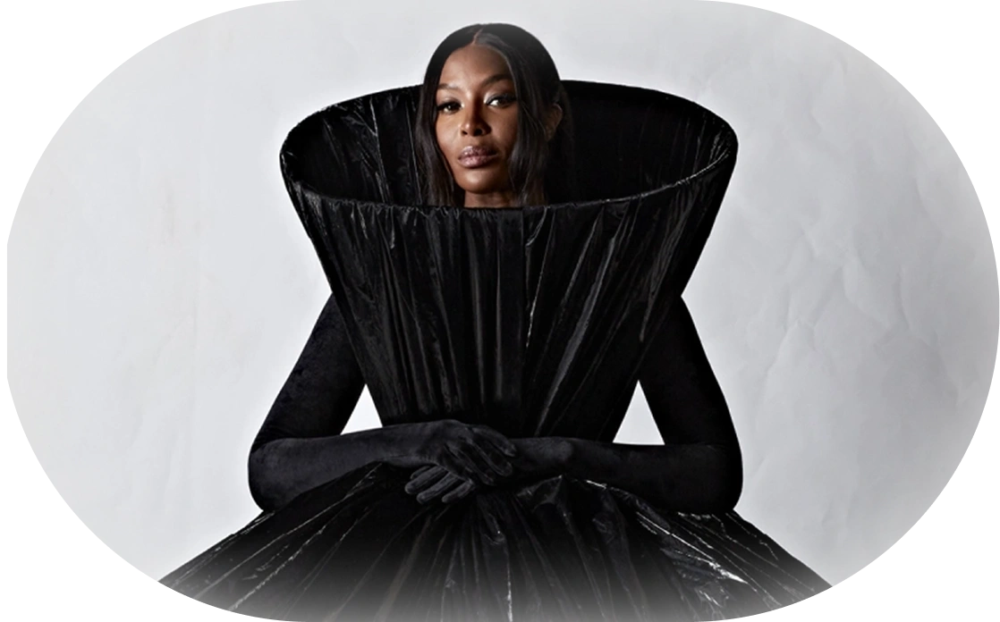

Дадаисты разрушали традиционные художественные каноны, используя неожиданные материалы и формы в коллажах и объектах. Случайность и переосмысление привычных вещей рождали новые, парадоксальные смыслы.
Дизайнер Демна Гвасалия активно экспериментирует с формами и пропорциями. Модели с огромными плечами и мешковатыми силуэтами бросают вызов традиционным представлениям о красоте и создают визуальный диссонанс. Это напоминает подход дадаистов, которые использовали абсурдные формы для критики общества.
Провокация играла ключевую роль в дадаизме. Художники стремились шокировать зрителей своими произведениями, применяя абсурдные образы и нестандартные идеи. Это дало им возможность оспорить общественные нормы и традиционные представления о том, что такое искусство.
Эта цитата акцентирует внимание на стремлении дадаистов к формированию нового языка и отказу от устоявшихся норм.
В этом произведении Балль применил элементы абсурда и звуковой поэзии, что демонстрировало его стремление разрушить привычные языковые структуры. Он отвергал традиционные слова и грамматические правила, создавая новый язык, свободный от влияния общества.
В Telegram канале пишем в формате визуального фаст-фуда — быстро и вкусно
Подписаться в Telegram
Бренд использует провокацию как один из приемов маркетинга. Один из примеров — это показы. Демна помещает свои вещи в совершенно другую среду и заставляет смотреть на моду с другой стороны.
Ирония играла одну из ключевых ролей в дадаистском подходе. Художники часто прибегали к сарказму и пародии, чтобы критиковать общество и искусство, подчеркивая абсурдность существующих норм.
Balenciaga под руководством дизайнера Демны Гвасалии известен своими провокационными и ироничными решениями в мире моды. От отсылок к потребительскому обществу до порчи самих вещей, например, очень грязные толстовки или кроссовки.
В завершение хочу подчеркнуть, что Balenciaga можно рассматривать как воплощение современного дадаизма в мире моды. Это направление использует иронию и провокацию, чтобы переосмыслить роль одежды и искусства в обществе. Такой подход делает бренд не только законодателем моды, но и значимым культурным явлением, которое продолжает вызывать споры о сущности стиля и потребления в современном мире.
В Telegram канале пишем в формате визуального фаст-фуда — быстро и вкусно
Подписаться в Telegram
Больше похожих статей читайте в нашем
Telegram-канале!

Автор этой статьи учавствовал в создании еще нескольких статей, загляни, вдруг там что-то вкусное

Если тебе есть что рассказать и показать по теме медиа — оставь свой ник в Telegram.